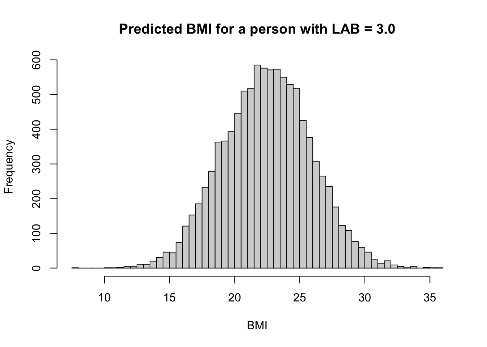

ベイズ分散分析のモデル解析
心理学実験を題材として
2024-09-24
A Blog Entry on Bayesian Computation by an Applied Mathematician
$$
$$
ベイズ線型回帰分析は多くのデータ解析における「最初の一歩」である．ベイズ回帰分析から始まるベイズのワークフローや，理論的な背景は次稿を参照：
ここではベイズ回帰モデルに変数を増やしていく際の解釈の変化や，変数の選択の問題などの実際的な問題を扱う．
library(readxl)
raw_df <- read_excel(path)はじめに \[ \texttt{BMI} = \beta_0 + \beta_{\texttt{LAB}}\cdot\mathtt{LAB} + \beta_{\texttt{LDL}}\cdot\mathtt{LDL} + \beta_{\texttt{LAB:LDL}}\cdot\mathtt{LAB}\cdot\mathtt{LDL} + \epsilon \] \[ \beta_0\sim\mathrm{t}(3;\mu_0,3.4),\qquad\epsilon\sim\mathrm{N}(0,\sigma^2), \] \[ \beta_{\texttt{LAB}},\beta_{\texttt{LDL}},\beta_{\texttt{LAB:LDL}}\sim\mathrm{N}(0,\infty),\qquad\sigma\sim\mathrm{t}(3;0,3.4), \] というモデルを考える．
library(brms)
model1 <- bf(
BMI ~ LAB
)
fit1 <- brm(
formula = model1,
data = raw_df,
chains = 4, iter = 5000, cores = 4
)library(knitr)
kable(get_prior(
formula = model1,
data = raw_df
))| prior | class | coef | group | resp | dpar | nlpar | lb | ub | source |
|---|---|---|---|---|---|---|---|---|---|
| b | default | ||||||||
| b | LAB | default | |||||||
| student_t(3, 22.7, 3.4) | Intercept | default | |||||||
| student_t(3, 0, 3.4) | sigma | 0 | default |
plot(fit1, variable = c("b_Intercept", "b_LAB"))
summary(fit1)$fixed Estimate Est.Error l-95% CI u-95% CI Rhat Bulk_ESS Tail_ESS
Intercept 20.6961127 0.428332 19.8724047 21.541559 1.0000894 9919.088 7202.522
LAB 0.6119695 0.105872 0.4014823 0.817622 0.9998797 9249.283 7186.599\(\beta_{\texttt{LAB}}\) の最頻値＝最尤推定量は \(0.6\) である．これは，LAB が \(1\) 違う個人の間で BMI の値が約 \(0.6\) 違うと解釈できる．
例えば LAB が \(3.0\) の個人の予測される BMI は \[ \mathtt{BMI}\approx20.7+0.6\times3.0=22.5 \] となる．
plot(raw_df$LAB, raw_df$BMI, xlab="LAB", ylab="BMI")
abline(summary(fit1)$fixed[1,1], summary(fit1)$fixed[2,1])
しかしこの図を見ればわかる通り，LAB は BMI の変動の一部しか説明しておらず，上述ような点推定的な議論にどれほど意味があるかは疑問である．
ベイズ回帰では幅を持って結果を理解できるため，その美点を活かさない理由はない．
plot(raw_df$LAB, raw_df$BMI, xlab="LAB", ylab="BMI")
sims <- as.matrix(fit1)
sims_to_display <- sample(nrow(sims), 100)
for (i in sims_to_display) {
abline(sims[i, 1], sims[i, 2], col = "gray")
}
abline(summary(fit1)$fixed[1,1], summary(fit1)$fixed[2,1])
さらにベイズ模型は事後予測分布をプロットし，実際の観測データと比べることで，モデルがデータ生成過程をどれほど反映できているかが瞬時に把握できる：
synthetic_data <- posterior_predict(fit1, newdata = data.frame(LAB = 3.0), ndraws = 10000)
hist(synthetic_data, nclass = 100, xlab = "BMI", main = "Predicted BMI for a person with LAB = 3.0")
p1 <- pp_check(fit1, ndraws = 100)
p1
事後予測分布のプロットを見ると，モデルが取り逃がしている構造として，BMI の分布が左右で非対称であることがあることがわかる．回帰直線のプロット 図 1 を見ても，直線の上側の点の方が裾が広く分散している．
「やせ」と「肥満」は対称ではないのである．
残差をプロットすることでさらに明らかになる：
res <- residuals(fit1)
plot(raw_df$LAB, res[,1], xlab="LAB", ylab="Residuals")
abline(0,0)ここに新たな変数 LDL を追加すると，LAB の係数 \(\beta_{\texttt{LAB}}\) は \(0.6\) から \(0.5\) に減少する．これはどういう意味だろうか？
model2 <- update(model1, BMI ~ LAB + LDL)
fit2 <- brm(
formula = model2,
data = raw_df,
chains = 4, iter = 5000, cores = 4
)plot(fit2, variable = c("b_Intercept", "b_LAB", "b_LDL"))
一般に係数の追加は層別に当たる．例えばこの結果は，LDL の値が同じ人の中では LAB が \(1\) 違う人の BMI の値が \(0.5\) 違うと解釈できる．
summary(fit2)$fixed Estimate Est.Error l-95% CI u-95% CI Rhat Bulk_ESS
Intercept 20.167095694 0.508697419 1.915738e+01 21.16817592 1.000156 12406.505
LAB 0.480590230 0.123523343 2.345347e-01 0.72295784 1.000166 8773.965
LDL 0.008655655 0.004414599 1.466805e-04 0.01750134 1.000146 8828.879
Tail_ESS
Intercept 7872.585
LAB 7388.178
LDL 7208.248ここで \(\beta_{\texttt{LDL}}\) の値が極めて小さいことに気づくかもしれない．これは LAB に比べて LDL の影響が小さいことを意味しない．なぜならばこの２つの変数はスケールが約 \(10^2\) 違うためである．LDL は 100 のスケール，LAB は 1 のスケールである．
説明変数 LAB と LDL のどちらが重要か，どっちをモデルに含めるべきかは全く別の方法で議論する必要がある．
そこでデータを正規化してみる：
df <- data.frame(
sBMI = scale(raw_df$BMI),
sLAB = scale(raw_df$LAB),
sLDL = scale(raw_df$LDL)
)
model2s <- bf(sBMI ~ sLAB + sLDL)
fit2s <- brm(
formula = model2s,
data = df,
chains = 4, iter = 5000, cores = 4
)plot(fit2s, variable = c("b_Intercept", "b_sLAB", "b_sLDL"))
summary(fit2s)$fixed Estimate Est.Error l-95% CI u-95% CI Rhat Bulk_ESS
Intercept 7.522651e-05 0.03425035 -0.068425590 0.06721458 1.0014686 9820.954
sLAB 1.541776e-01 0.03921660 0.077864765 0.23129153 0.9998343 8961.051
sLDL 7.719841e-02 0.04016989 -0.001446599 0.15438400 1.0000044 9394.795
Tail_ESS
Intercept 7058.981
sLAB 7946.039
sLDL 8158.999データを正規化してしまったため，直接的な係数の解釈はできないが，係数を相互に比較できる．
またその他のモデルの性質は変わらない．例えば事後予測分布も変わらない．
library(gridExtra)
p2s <- pp_check(fit2s, ndraws = 100)
p2 <- pp_check(fit2, ndraws = 100)
grid.arrange(p2, p2s, nrow = 1)
再び正規化する前のデータに戻る．
model3 <- update(model2, BMI ~ LAB * LDL)
fit3 <- brm(
formula = model3,
data = raw_df,
chains = 4, iter = 5000, cores = 4
)plot(fit3, variable = c("b_Intercept", "b_LAB", "b_LDL", "b_LAB:LDL"))
summary(fit3)$fixed Estimate Est.Error l-95% CI u-95% CI Rhat Bulk_ESS
Intercept 18.343555254 1.604795320 15.143167287 21.369150246 1.000525 3244.231
LAB 0.951188612 0.411125758 0.170115468 1.769360158 1.000082 3333.452
LDL 0.023882438 0.013536050 -0.001720447 0.050917031 1.000414 3315.768
LAB:LDL -0.003783052 0.003173761 -0.010074600 0.002145523 1.000361 3166.146
Tail_ESS
Intercept 4340.650
LAB 4113.096
LDL 4512.152
LAB:LDL 3934.990交差項を含む線型回帰における係数の解釈はさらに限定的になる．
\(\beta_{\texttt{LAB}}\) は LDL が \(0\) である人が仮にいたとした場合の，LAB が \(1\) 違う人の間の BMI の平均的な違いを表す，と解釈できる．（LDL の平均が \(0\) になるように変数変換をして回帰するともっと自然な解釈ができる）．
\(\beta_{\texttt{LAB:LDL}}\) は片方の係数 \(\beta_{\texttt{LAB}}\) を固定した際，LDL が \(1\) だけ違うグループにおける係数 \(\beta_{\texttt{LDL}}\) との違いを表す．
すなわち交差項の追加は，LDL に依って層別し，それぞれのグループに異なる \(\beta_{\texttt{LAB}}\) を推定することを可能にする．この点で階層モデリングに似ている．
交差項 LAB*LDL の追加は，LDL の違うサブグループの間に異なる LAB をフィッティングすることを可能にする．
このことを最もよく見るには，LDL が上半分か下半分かで LAB の係数がどう変わるかを見るのが良い．
raw_df$LDLcate2 <- ifelse(raw_df$LDL > median(raw_df$LDL), "High", "Low")model3_cate <- bf(BMI ~ LAB * LDLcate2)
fit3_cate <- brm(
formula = model3_cate,
data = raw_df,
chains = 4, iter = 5000, cores = 4
)Compiling Stan program...Start samplingplot(raw_df$LAB, raw_df$BMI, xlab="LAB", ylab="BMI")
b_hat <- summary(fit3_cate)$fixed
abline(b_hat[1,1], b_hat[2,1], col = "red")
abline(b_hat[1,1] + b_hat[3,1], b_hat[2,1] + b_hat[4,1], col = "blue")
legend("topleft", # または "topright", "bottomleft", "bottomright" など
legend = c("High", "Low"),
col = c("red", "blue"),
lty = 1)
LDL が大きいと，LAB の BMI に与える影響は緩やかになることがわかる．LDL の方が LAB の代わりに BMI の増加を説明してしまっているとも考えられる．
線型回帰において，説明変数の追加は，「他の説明変数を固定したグループ内での」係数の推定に変化する（階層モデリングにつながる見方）．
残差プロットや事後予測プロットによるモデルの検証は，解析と並行して見てきた．
ここではより詳細に，モデルの予測性能に基づいた検証・比較方法を見る．
交差検証法によるスコア elpd_loo によるモデル比較が一つ推奨される．
図 1 の回帰直線のプロットと 図 2 の残差プロットを見ると，残差がまだ構造を持っていることがわかる．
res <- residuals(fit3)
plot(raw_df$LAB, res[,1], xlab="LAB", ylab="Residuals")
abline(0,0)
この残差は標本分散 \(\widehat{\sigma}^2\)
sigma <- sqrt(var(res)[1,1])
print(sigma)[1] 3.394462を持っている．
ひとまず LAB と LDL について回帰をすることで，データの変動がどれほど説明できたかを考えてみよう．
\[ R^2:=1-\frac{\widehat{\sigma}^2}{s_y^2}=\frac{s_y^2-\widehat{\sigma}^2}{s_y^2} \]
という値は 決定係数 と呼ばれ，データ \(y\) の分散 \(s_y^2\) のうち「説明された分散」の割合を表す．1
1-sigma^2/var(raw_df$BMI)[1] 0.04403279データの変動の \(4\%\) しか説明できていないことがわかる．
ベイズ決定係数 (Andrew Gelman and Vehtari, 2019) は brms パッケージで次のように計算できる：
bayes_R2(fit3) Estimate Est.Error Q2.5 Q97.5
R2 0.04735052 0.01359373 0.02345481 0.07669648以上の \(R^2\) の議論では係数を点推定して「残差」を議論していた．
他の可能性も考慮して推定を改善するのがベイズのやり方である．
ベイズ決定係数は，事後予測分布からのサンプルを用いて複数回予測値 \(\widehat{y}_i\) を計算し， \[ R^2_{\texttt{Bayes}}:=\frac{\mathrm{V}[\widehat{y}]}{\mathrm{V}[\widehat{y}]+\sigma^2} \] という値で「データの変動のうち説明された割合」を表す．
(Akaike, 1974) は次のように定義される： \[ \mathtt{AIC}=-2\biggr(\sup_\theta\log p(y|\theta)\biggl)+2p. \]
第１項は deviance とも呼ばれ，残差を表す．
AIC は新たなデータ点が観測された際の，そのデータ点に対するデビアンス（ある種の損失）の推定量となっており，小さいほどよい．
AIC と同様の推定を，計算機集約的に行う方法に次節の交差検証法がある：
事後予測検証では事後分布と観測を比較したが，よりこの好ましくは新しい（推定に用いていない）データと突き合わせることである．
LOO (Leave-One-Out) 交差検証 (Stone, 1974) では，データを１つだけ抜いてモデルを推定し，このモデルの予測値と実際の値を比較するモデル検証法である．
brms パッケージでは loo パッケージ を内部で利用して高速に計算することができる．
loo(fit3)
Computed from 10000 by 839 log-likelihood matrix.
Estimate SE
elpd_loo -2220.7 26.8
p_loo 5.6 0.7
looic 4441.4 53.5
------
MCSE of elpd_loo is 0.0.
MCSE and ESS estimates assume MCMC draws (r_eff in [0.3, 1.0]).
All Pareto k estimates are good (k < 0.7).
See help('pareto-k-diagnostic') for details.回帰分析において予測値と実際の（省いていた）データの乖離は，AIC を踏襲して事後予測分布のスコア関数で測る (Vehtari et al., 2017, p. 1414)．
elpd (expected log predictive density) は，LOO 交差検証により得る，（省いていた）データの対数尤度の平均である： \[ \mathrm{elpd}_{\text{loo}}=\sum_{i=1}^n\log p(y_i|y_{-i})=\sum_{i=1}^n\int p(y_i|\theta)p(\theta|y_{-i})\,d\theta. \]
この値が大きいほどモデルの予測が良い．一般に elpd は，一度見たことあるデータ点に対する事後予測スコアよりも低くなる．2 この際の差は p_loo が測っており，乖離が大きすぎるとモデルがデータに過適合していることを表す．
p_loo は有効パラメータ数の（一致）推定量である．今回のモデルには切片項と LAB, LDL, LAB:LDL そして sigma の５つのパラメータがあるが，それより \(0.6\) だけ大きい値が出ている．
最後の列は情報量規準のスケールにしたものである： \[ \mathtt{looic}=-2\times\mathrm{elpd}_{\text{loo}}. \]
一般に LOO-CV は計算が大変であるが，loo パッケージは Pareto Smoothed Importance Sampling (PSIS) (Vehtari et al., 2024) を用いて高速に計算している．
\(k>0.7\) の場合はこれがうまくいっていないことを示唆する．この下で \(\mathtt{p_loo}>p\) はモデルの誤特定を示唆する．
brms パッケージでは loo_compare 関数で２つのモデルの elpd スコアを比較できる：
loo_compare(loo(fit1), loo(fit2)) elpd_diff se_diff
fit2 0.0 0.0
fit1 -0.9 2.1 elpd_diff の値は標準偏差と比べて大変に小さい．交差検証の観点からは，LDL の追加は BMI の予測の観点から全く違いがないことがわかる．
LAB による BMI への回帰の残差には，左右の非対称性が見られる 2.2．
そして更なる変数 LDL の追加は予測の観点では特に影響がないことがわかった 3.6．
そこでここでは手軽に非線型性を取り入れる方法として，データを変換することを考える．
第 2.4 節でデータを標準化すると回帰モデルの係数の解釈が容易になることみた．
しかしデータの線型変換は線型回帰モデルを変えず，推定には何の影響も与えない．
そこでここでは非線型な変換に注目する．
線型回帰モデリングにおける最大の仮定は，説明変数の加法性と，\(y\) への効果の線型性である： \[ y=\beta_0+\beta_1x_1+\beta_2x_2+\cdots. \]
LAB や LDL の BMI への影響が線型であると見るのは相当横暴な仮定である．LAB と LDL が両方高いことが相乗的に BMI を高めるシナリオの方があり得そうである．
BMI も LAB も LDL も正の値しか取らないこともあり，対数変換を考えることは良い第一歩だろう．
model1_log <- update(model1, log(BMI) ~ LAB)
fit1_log <- brm(
formula = model1_log,
data = raw_df,
chains = 4, iter = 5000, cores = 4
)res <- residuals(fit1_log)
plot(raw_df$LAB, res[,1], xlab="LAB", ylab="Residuals (on log scale)")
abline(0,0)
残差プロットを見ると，元のスケールでの線型回帰 図 2 と比べて非対称性は軽減している．
library(bayesplot)yrep <- posterior_predict(fit1_log, ndraws = 100)
p1_log <- ppc_dens_overlay(raw_df$BMI, exp(yrep))
grid.arrange(p1, p1_log, nrow=1)
事後予測分布も改善しているのがわかる．
ただし，説明変数を対数スケールに変換してしまったので，直接 LOO スコアを比較することはできないことに注意する：
loo_compare(loo(fit1), loo(fit1_log))Warning: Not all models have the same y variable. ('yhash' attributes do not
match) elpd_diff se_diff
fit1_log 0.0 0.0
fit1 -2657.0 8.2同様に説明変数にも対数変換を施すことができる．
model1_loglog <- update(model1_log, log(BMI) ~ log(LAB))
fit1_loglog <- brm(
formula = model1_loglog,
data = raw_df,
chains = 4, iter = 5000, cores = 4
)yrep <- posterior_predict(fit1_loglog, ndraws = 100)
p1_loglog <- ppc_dens_overlay(raw_df$BMI, exp(yrep))
grid.arrange(p1_log, p1_loglog, nrow=1)
予測性能はわずかに悪化していることがわかる：
loo_compare(loo(fit1_log), loo(fit1_loglog)) elpd_diff se_diff
fit1_log 0.0 0.0
fit1_loglog -1.8 1.1 median(loo_R2(fit1_log))[1] 0.02487841median(loo_R2(fit1_loglog))[1] 0.0223436しかし log-log モデルの係数は弾力性 (elasticity) としての解釈ができることもあり，解釈性の観点から選好されることがある (Gelman et al., 2020, p. 195)．
離散変数の扱いは連続変数よりも難しくなる．基本的に一般化線型モデルの枠組みが必要になる．
しかし連続変数間の関数関係が複雑だと思われる場合，ノンパラメトリック手法を求める前に，変数を離散化して解析することも得るものが大きい場合が多い．
このような設定は，離散変数を扱う積極的な理由になる．非線型性を扱うために設定を簡略化するのである．
(10 節 Gelman et al., 2020) に線型重回帰モデルにおいて，係数の解釈法が丁寧に解説されている．
(11 節 Gelman et al., 2020) はモデルの検証法を扱っている．
(Gelman et al., 2020) では基本的に rstanarm パッケージを用いているが，本稿では brms パッケージを用いた．
決定係数は，回帰が OLS 推定量により推定された場合には \(Y\) と説明変数のベクトル \(X\) との間の 重相関係数 とも一致する (Mudholkar, 2014)．(Gelman et al., 2020, p. 168) も参照．一般に決定係数は母集団の多重相関係数の一致推定量だと見れる．こうみた場合のバイアスを低減・脱離した値に，自由度調整済み決定係数，(Olkin and Pratt, 1958) 推定量などが存在する．↩︎
訓練に用いたデータ点に関する事後予測スコアはdeviance と関係があり，\(-2\) を乗じたものは deviance と同じスケールになる (Gelman et al., 2020, p. 174), (Vehtari et al., 2017, p. 1427)．AIC は deviance から \(2p\) を引いたものである (Gelman et al., 2020, p. 175)．↩︎